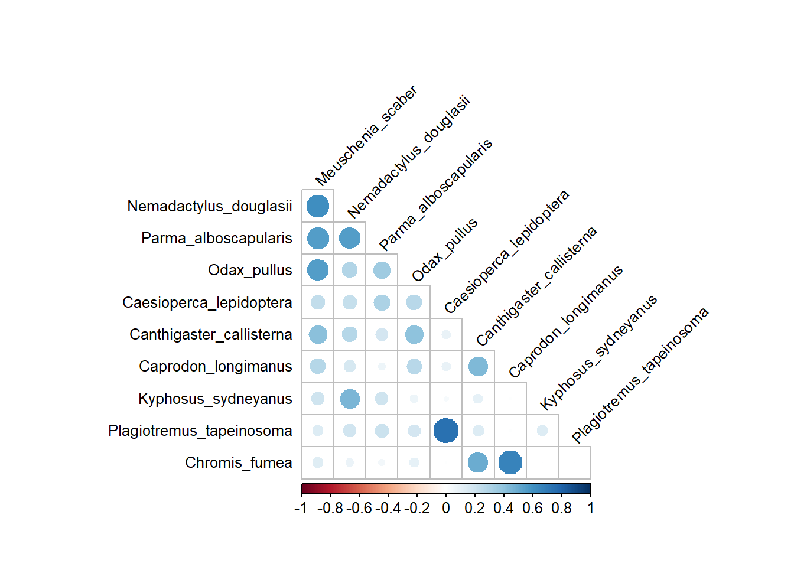
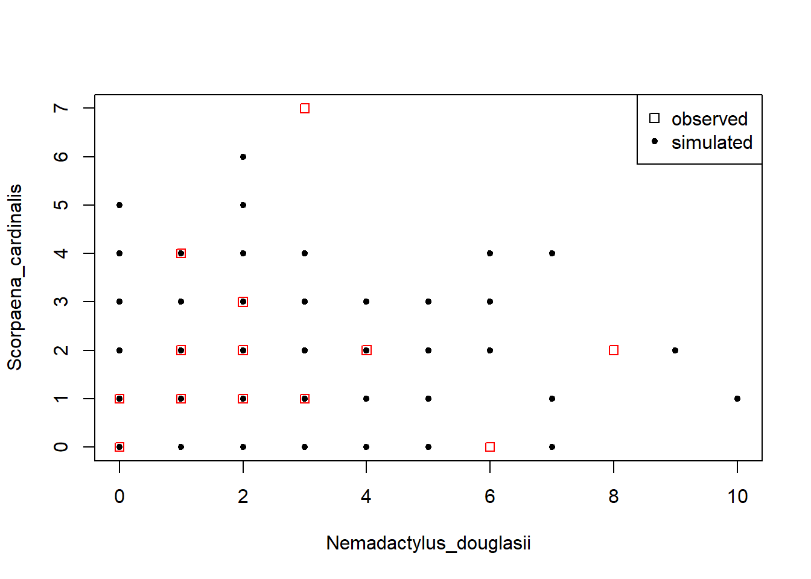
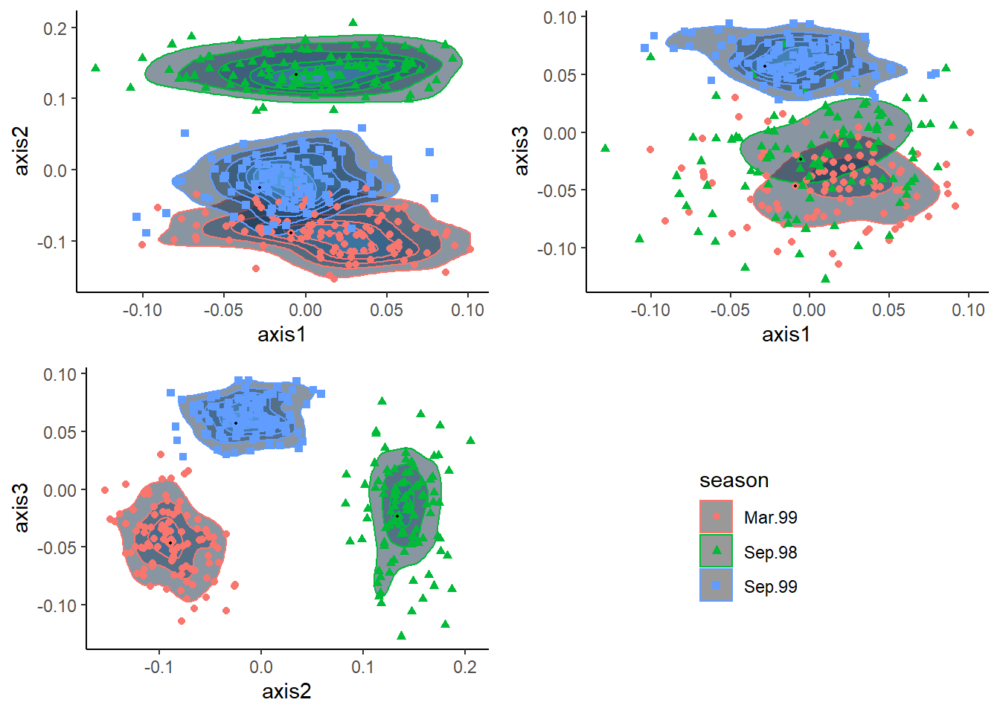

Prepare analysis
To run this code you will need to install the pacman R package beforehand but this will take care of all the other packages required.
pacman::p_load(
corrplot,
here,
readxl,
data.table,
ecodist,
dplyr,
magrittr,
stringr,
parallelDist,
ggplot2,
usedist,
vegan,
rgl
)Like Anderson et al. (2019), we will use the Poor Knight fish data which you can download as part of the supplementary materials of the paper. There you can also find the R scripts 1 to 3 (named ece34948-sup-0003-DataS1.txt, ece34948-sup-0004-DataS2.txt and ece34948-sup-0005-DataS3.txt). In the code below, we load the data and the renamed R scripts. Note that the original third script also contains an example use case. I split the file into one containing the functions which we load here and another one which contains the example use case, which I don’t load.
dt_fish <-
read_excel(
path = file.path(data_directory,
"ece34948-sup-0001-tables1.xlsx"),
skip = 1
)
source(file.path(script_directory, "RCode1.R"))
source(file.path(script_directory, "RCode2.R"))
source(file.path(script_directory, "RCode3_functions.R"))The “treatment” in this example is the season in which the fish were observed.
The data contains three seasons: September 1998 and 99 as well as March 1999.
We want to construct a different copula model for each season so we need to separate the data set.
The select() function from dplyr is explicitly
loaded the :: sign because the MASS package which will is loaded inside the chooseDistr() function also contains a select() function
which would mask dplyr’s.
vec_unique_levels =
dt_fish %>%
dplyr::select(Time) %>%
pull() %>%
unique()Next we define a function to: 1. subset data with a certain value of the variable
Time, 2. remove the two variables Sample and Time, and 3. convert the result to a matrix.
The last step is necessary because the chooseDistr() function requires
a matrix as input.
We use a function for all of this to adhere to the DRY principle:
Don’t repeat yourself.
In coding you should avoid writing the same lines of code over and over again to apply them to different objects.
This makes it more cumbersome to fix errors or to rerun the analysis.
tbl_to_mat <- function(sub){
out <- filter(dt_fish, Time == sub) %>%
dplyr::select(-c(Sample, Time)) %>%
as.matrix()
}The original season names have dots (.) in them. In coding in general, you should avoid dots in the names of objects. In R this is not a problem but in other languages they can cause errors, so its a good habit to use underscores instead.
for (i in vec_unique_levels){
cr_new_i <- i %>%
str_replace(pattern = "\\.", replacement = "_") %>%
str_to_lower()
assign(x = paste0("mt_",cr_new_i),
value = tbl_to_mat(sub=i))
rm(i, cr_new_i)
}In this loop, we first remove species that do not occur in the subsets (i.e.
where the sum of the column is zero). They would cause errors in the
chooseDistr() function. Afterwards we call the function on each matrix.
The loop loops over all files in the environment whose names contain “mt”.
for(i in ls()[grepl(pattern="mt", x = ls())]){
mt_loop = get(i)
rm_id = which(colSums(mt_loop) == 0)
if (length(rm_id) != 0) {
mt_loop = mt_loop[,-rm_id]
}
l_cd_out = chooseDistr(Y = mt_loop)
df_cd_out = l_cd_out$marginals
cr_save_name_part = paste(str_split_fixed(string=i,pattern="_",n=3) %>% .[,2:3], collapse = "_")
cr_save_name = paste0("df_", cr_save_name_part)
assign(x=i, value=mt_loop)
assign(x=cr_save_name,value=df_cd_out)
rm(i, mt_loop,l_cd_out,df_cd_out,cr_save_name_part,cr_save_name,rm_id);gc()
}Now we have the optimal marginal distributions for each species and can turn to
the significant pair-wise associations.
The pairWise() function is not well written and occasionally returns an error.
If that happens to you, simply rerun it.
You can warp it in a while-loop combined with purrr’s safely() to let the function run until it finishes without error.
The arguments are the data set (Y), the number of permutations (nperm), the type of correction applied to handle family-wise error rate (alpha_type), should a graph be plotted (graphic) and the significance level (sig_level). The avaialable options for alpha_type are described well in Anderson et al. (2019).
pwa_sep_98 = pairWise(
Y = mt_sep_98,
nperm = 99999,
alpha_type = "PCER",
graphic = FALSE,
sig_level = 0.01
)
pwa_sep_99 = pairWise(
Y = mt_sep_99,
nperm = 99999,
alpha_type = "PCER",
graphic = FALSE,
sig_level = 0.01
)
pwa_mar_99 = pairWise(
Y = mt_mar_99,
nperm = 99999,
alpha_type = "PCER",
graphic = FALSE,
sig_level = 0.01
)We can construct correlation plots or Index of the observed association (IoA), …
par(xpd=TRUE)
corrplot(
pwa_sep_98$IoA.obs,
diag = FALSE,
type = "lower",
tl.cex = 0.8,
tl.srt = 45,
tl.col = "black",
mar = c(0, 3, 5, 3)
)
… the shrunken IoA and …
par(xpd=TRUE)
corrplot(
pwa_sep_98$IoA.shrunk,
diag = FALSE,
type = "lower",
tl.cex = 0.8,
tl.srt = 45,
tl.col = "black",
mar = c(0, 3, 5, 3)
)
… the subset of statistically significant IoAs.
par(xpd=TRUE)
corrplot(
pwa_sep_98$IoA.subset,
diag = FALSE,
type = "lower",
tl.cex = 0.8,
tl.srt = 45,
tl.col = "black",
mar = c(0, 3, 5, 3)
)
We need to add a species column. Later functions require this.
df_sep_98$Species <- rownames(df_sep_98)
df_mar_99$Species <- rownames(df_mar_99)
df_sep_99$Species <- rownames(df_sep_99)We also extract the ids of species with statistically significant associations …
s98mt_id <- which(colnames(mt_sep_98) %in% pwa_sep_98$associated)
s98df_id <- which(rownames(df_sep_98) %in% pwa_sep_98$associated)
m98mt_id <- which(colnames(mt_mar_99) %in% pwa_mar_99$associated)
m98df_id <- which(rownames(df_mar_99) %in% pwa_mar_99$associated)
s99mt_id <- which(colnames(mt_sep_99) %in% pwa_sep_99$associated)
s99df_id <- which(rownames(df_sep_99) %in% pwa_sep_99$associated)… and create subsets that only hold these taxa.
mt_sep_98_assoc <- mt_sep_98[,s98mt_id]
mt_mar_99_assoc <- mt_mar_99[,s99mt_id]
mt_sep_99_assoc <- mt_sep_99[,s99mt_id]
df_sep_98_assoc <- df_sep_98[s98df_id,]
df_mar_99_assoc <- df_mar_99[s99df_id,]
df_sep_99_assoc <- df_sep_99[s99df_id,]Finally, we get to estimate the copulas.
li_copula_sep_98 = estimate_copula(data = mt_sep_98_assoc,marginal_details = df_sep_98_assoc)
li_copula_mar_99 = estimate_copula(data = mt_mar_99_assoc,marginal_details = df_mar_99_assoc)
li_copula_sep_99 = estimate_copula(data = mt_sep_99_assoc,marginal_details = df_sep_99_assoc)The resulting copula models contain the MLE estimates of a variance-covariance matrix.
corr_mcem_sep_98 = li_copula_sep_98[["cov_final"]]
corr_mcem_mar_99 = li_copula_mar_99[["cov_final"]]
corr_mcem_sep_99 = li_copula_sep_99[["cov_final"]]Next, we write a small function to add the non-associated species back into the variance-covariance matrix.
add_unass <- function(data, spe_names) {
new_names <- setdiff(spe_names, row.names(data))
n_new <- length(new_names)
n_old <- ncol(data)
mt_add1 <- matrix(0, ncol = ncol(data), nrow = n_new)
mt_add2 <- matrix(0, ncol = n_new, nrow = nrow(data))
data <- rbind(data, mt_add1)
row.names(data)[(n_old+1):(n_old+n_new)] <- new_names
mt_add2 <- matrix(0, ncol = n_new, nrow = nrow(data))
data <- cbind(data, mt_add2)
colnames(data)[(n_old+1):(n_old+n_new)] <- new_names
diag(data) <- 1
return(data)
}And applied it.
corr_mcem_sep_98_add <- add_unass(data = corr_mcem_sep_98, spe_names = rownames(df_sep_98))
corr_mcem_mar_99_add <- add_unass(data = corr_mcem_mar_99, spe_names = rownames(df_mar_99))
corr_mcem_sep_99_add <- add_unass(data = corr_mcem_sep_99, spe_names = rownames(df_sep_99))At this stage, we can easily simulate new data sets from our copulas.
# How many simulations?
N = 100
simulated_data_sep_98 =
generate_copula_data(N, marginal_details = df_sep_98, cov = corr_mcem_sep_98_add)
#species_indices <- sample(x = colnames(mt_sep_98), 2)
species_indices = c("Nemadactylus_douglasii", "Scorpaena_cardinalis")
pch <- c(rep(0, nrow(mt_sep_98)), rep(20, N))
plot(
rbind(mt_sep_98[, species_indices], simulated_data_sep_98[["observed"]][, species_indices]),
pch = pch,
col = c(rep("red", nrow(mt_sep_98)), rep("black", N))
)
legend(
x = "topright",
pch = c(0, 20),
legend = c("observed", "simulated")
)
Now comes the part which was hardest to figure out because it is not included in the provided code. If you compare all we have done with figure 6 in Anderson et al. (2019), we are only at c. The next steps are simulating new data sets from our copulas to create a new super matrix. This we can use to compute a super distance matrix from which we will derive centroids for each treatment (season).
We are going to do 100 separate simulations (n_sim). The number of sites belonging to each season will be kept constant at the original levels which are stored in n_g1-3. dt_base is a template witch will be used as a starting point in each simulation.
In its original form it only has a Sample column which gives each row an id and a Treatment (here: season) column which assigns a treatment level to each observation.
Each iteration of the for-loop fills a copy of dt_base with the simulated abundances and saves its results as an element in the list sim_list.
After the loop is finished we combine all single data sets into one super set (sim_mat).
In the loop, we also create null model simulations in which the observations are randomly shuffled after drawing them from the simulations.
This super set is quite large and computing its distance matrix can is computationally demanding.
To speed this up we use the parrallelDist package which enables us to use multiple cores for this task.
Lastly, we can find the centroids of each season with the betadisper() function from <span style:“CornflowerBlue”>vegan.
n_sim = 100
n_g1 = nrow(mt_sep_98)
n_g2 = nrow(mt_mar_99)
n_g3 = nrow(mt_sep_99)
seas_var = append(rep(vec_unique_seasons[1], n_g1), rep(vec_unique_seasons[2], n_g2))
seas_var = append(seas_var, rep(vec_unique_seasons[3], n_g3))
dt_base = data.table(Sample = 1:56, Time = seas_var)
sim_list = list()
sim_list[[1]] = setDT(dt_fish)
sim_list[[1]][,null_model := FALSE]
for (i in 1:(2*n_sim)){
ld_s98 <-
generate_copula_data(n_g1, marginal_details = df_sep_98, cov = corr_mcem_sep_98_add)
ld_m99 <-
generate_copula_data(n_g2, marginal_details = df_mar_99, cov = corr_mcem_mar_99_add)
ld_s99 <-
generate_copula_data(n_g3, marginal_details = df_sep_99, cov = corr_mcem_sep_99_add)
mat_new = rbindlist(list(
as.data.frame(ld_s98[["observed"]]),
as.data.frame(ld_m99[["observed"]]),
as.data.frame(ld_s99[["observed"]])
), fill = T)
for (j in seq_len(ncol(mat_new)))
set(mat_new, which(is.na(mat_new[[j]])), j, 0)
mat_new = cbind(dt_base, mat_new)
mat_new[, Time := paste0(Time, "_", i)]
mat_new[, null_model := FALSE]
if (i <= n_sim){
sim_list[[i+1]] = mat_new
} else{
shuffle = sample(1:nrow(mat_new),nrow(mat_new))
mat_new$Time = mat_new$Time[shuffle]
mat_new[, null_model := TRUE]
mat_new[, Time := paste0(Time, "_n", i-n_sim,"")]
sim_list[[i+1]] = mat_new
}
rm(mat_new)
}
sim_mat = rbindlist(sim_list, use.names = TRUE)
sim_mat[, Time := factor(Time)]
d_super = parallelDist(x = as.matrix(sim_mat[,-c(1,2)]), method = "bray", threads = 2)
centroids = betadisper(d_super, sim_mat$Time, type = "centroid")Prepare data for plotting.
seas_vec = rownames(centroids$centroids)
o_id = which(!str_detect(seas_vec, "_"))
null_id = which(str_detect(seas_vec, "n"))
seas_vec[null_id] = "null model"
seas_vec %<>% str_remove("_.*")
plot_data = data.frame(axis1 = centroids$centroids[,1],
axis2 = centroids$centroids[,2],
axis3 = centroids$centroids[,3],
season = factor(seas_vec),
og = FALSE)
plot_data$og[o_id] = TRUEBelow we display the results. First without a null model.
p12 = ggplot(data = filter(plot_data, season != "null model"),
aes(x = axis1, y = axis2, col = season)) +
stat_density_2d(aes(fill = ..level..), geom = "polygon", alpha = 0.5) +
geom_point(aes(shape = season)) +
geom_point(data = filter(plot_data, og == TRUE),
col = "black",
size = 0.3) +
theme_classic() +
guides(fill = FALSE)
p13 = ggplot(data = filter(plot_data, season != "null model"),
aes(x = axis1, y = axis3, col = season)) +
stat_density_2d(aes(fill = ..level..), geom = "polygon", alpha = 0.5) +
geom_point(aes(shape = season)) +
geom_point(data = filter(plot_data, og == TRUE),
col = "black",
size = 0.3) +
theme_classic() +
theme(legend.position = "none")
p23 = ggplot(data = filter(plot_data, season != "null model"),
aes(x = axis2, y = axis3, col = season)) +
stat_density_2d(aes(fill = ..level..), geom = "polygon", alpha = 0.5) +
geom_point(aes(shape = season)) +
geom_point(data = filter(plot_data, og == TRUE),
col = "black",
size = 0.3) +
theme_classic() +
theme(legend.position = "none")
p12_leg = cowplot::get_legend(p12)
cowplot::plot_grid(p12 + theme(legend.position = "none"),
p13,
p23,
p12_leg) And now with null model.
p12 = ggplot(data = plot_data, aes(x = axis1, y = axis2, col = season)) +
stat_density_2d(aes(fill = ..level..), geom = "polygon", alpha = 0.5) +
geom_point(aes(shape = season)) +
geom_point(data = filter(plot_data, og == TRUE),
col = "black",
size = 0.5) +
theme_classic() + guides(fill = FALSE)
p13 = ggplot(data = plot_data, aes(x = axis1, y = axis3, col = season)) +
stat_density_2d(aes(fill = ..level..), geom = "polygon", alpha = 0.5) +
geom_point(aes(shape = season)) +
geom_point(data = filter(plot_data, og == TRUE),
col = "black",
size = 0.5) +
theme_classic() +
theme(legend.position = "none")
p23 = ggplot(data = plot_data, aes(x = axis2, y = axis3, col = season)) +
stat_density_2d(aes(fill = ..level..), geom = "polygon", alpha = 0.5) +
geom_point(aes(shape = season)) +
geom_point(data = filter(plot_data, og == TRUE),
col = "black",
size = 0.5) +
theme_classic() +
theme(legend.position = "none")
p12_leg = cowplot::get_legend(p12)
cowplot::plot_grid(p12 + theme(legend.position = "none"),
p13,
p23,
p12_leg)Below is code to create a 3d ordination plot. Displaying this on the website unfortunately does not work. However, you should be able to display in your R instance.
colors3d = c('royalblue1', 'darkcyan', 'oldlace', "gray")
plot_data$color <- colors3d[ as.numeric(plot_data$season) ]
plot3d(x = plot_data$axis1, y = plot_data$axis2, z = plot_data$axis3, col = plot_data$color, type = 's',
radius = .005)